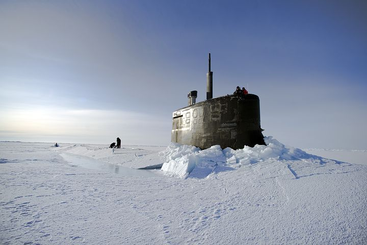

My name is Derrien Walters. I am a CSC106 student this year at URI. I am honored to have served in the U.S. Navy's Submarine Force for more than 12 years. I was fortunate to have been stationed in Hawaii for the later part of my career and that is where I learned to surf. I am currently persuing a Compuer Science degree with a minor in Business. My focus is on schooling currently but I am open to job offers.
I enjoy logic based games and activities. My wife and I have two children, two cat, two dogs.
